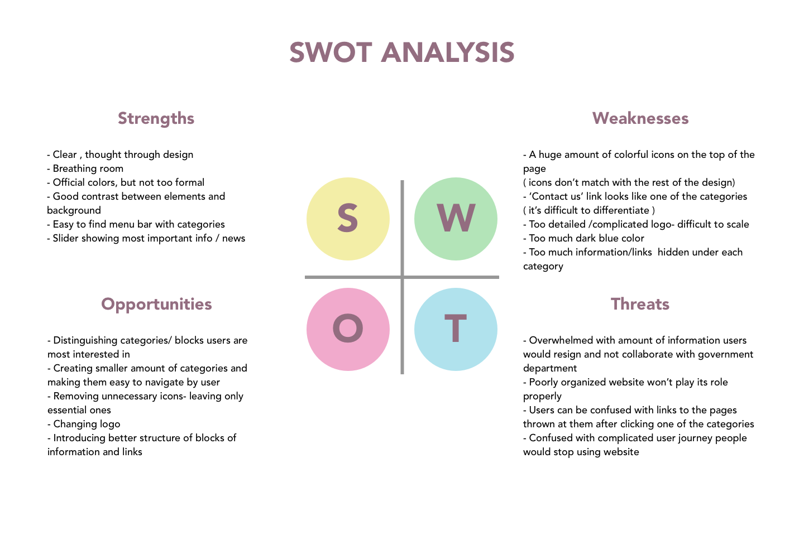

HUD.GOV - redesign of the government agency website
Redesign of HUD.GOV navigation utylizying responsive design.
Created new style guide, logo and introduced streamlined user flows.
Created new style guide, logo and introduced streamlined user flows.
1. PREPARATION AND SCOPE
Type of the project: Individual project
Role: Sole UX Designer performing all of the below tasks.
Role: Sole UX Designer performing all of the below tasks.
Tools: Sketch, InVision
2. RESEARCH
Current agency website - Heuristic evaluation

Many colorful icons. Some of them are not recognizable.
“Contact us” button looks like one of the categories.

Many sections, categories, subcategories, links - the amount of information is overwhelming.

User is forced to scroll down the page to find a press release from previous months
Current HUD.GOV website violates 4 of the folllowing heuristics principles:
Recognition rather than recall
- there are too many categories and subcategories user needs to navigate through. On the top of the website there
are many colorful icons, some of them are unclear and unintuitive.
Flexibility and efficiency of use
- user flows are not efficient and simple tasks are taking too much time. Insted of efficient navigation, user can
find scrolling down the page as the only option to find desired document.
Aesthetic and minimalist design
- website contains a lot of rarely needed information. User is overloaded with amount of categoreis, subcategories,
links and sections. Information architecture is poorly made.
Help and documentation
- when users are looking for contact information on the website, it’s difficult to find ‘contact us’ button. It’s
located in the nav bar and looks like one of the categories. After clicking the button, there are multiple options
to choose from.
SWOT ANALYSIS
3. INFORMATION SYNTHESIS


Mind mapping helped me get some initial ideas out, organize my thoughts and prioritize the tasks in the process
of redesigning the website.
4. CONCEPTS GENERATIONS
Current Logo
- too formal/ oldschool
- too detailed
- difficult to scale
- too detailed
- difficult to scale

Drafts of the New Logo
- minimalist design
- fresh look
- easy to scale
- blocks, lines
- fresh look
- easy to scale
- blocks, lines

Iterations of the new logo


Final version of the logo


Inspiration moodboard

5. INTERACTION VISUALIZATION
I prepared two versions of middle-fidelity prototypes and presented them to users. Both of the versions were responsive. In the firt version I
incorporated side navigation with the categories bar in vertical orientation. For the version B I chose horizontal navigation component with image links.
Wireframes - version A Desktop


Wireframes - version A Tablet


Wireframes - version A Mobile


Wireframes - version B Desktop


Wireframes - version B Tablet


Wireframes - version B Mobile


6. IDEATION
Hi fidelity prototype


7. TESTING
5 out of 6 people who took part in the interview chose version 2 as more intuitive. They pointed out that the second
version of prototype is more interesting, modern looking and visually pleasing. Basing on the opinions of the
interviewees, I built high-res comps of the 2nd design.
8. REFINING AND REPEATING
After the phase of testing I gathered all of the insights and feedback I received and implemented some changes to my design.
I never consider my design as a finished project, to me it's always a work in progress. It's important to know that there is always room for improvement
and our design should adjust to changing user needs.